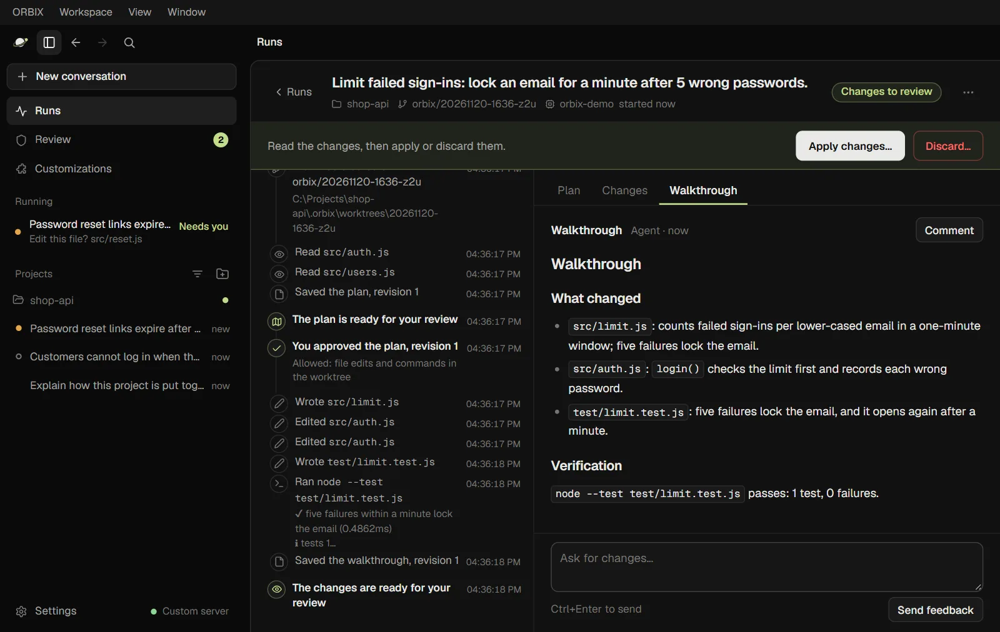
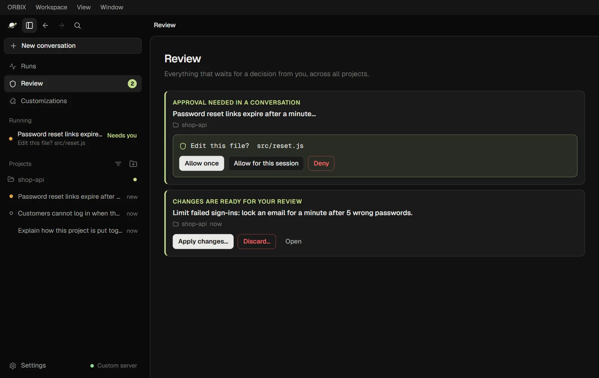
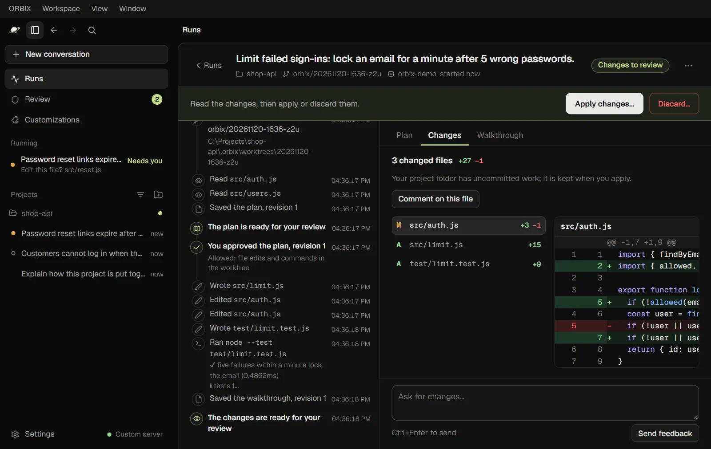
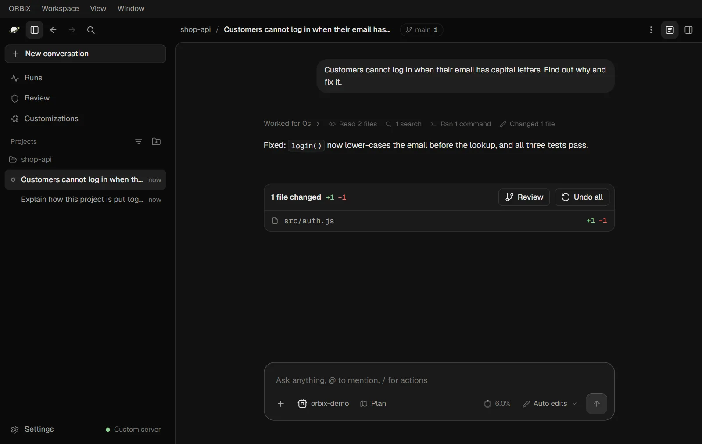
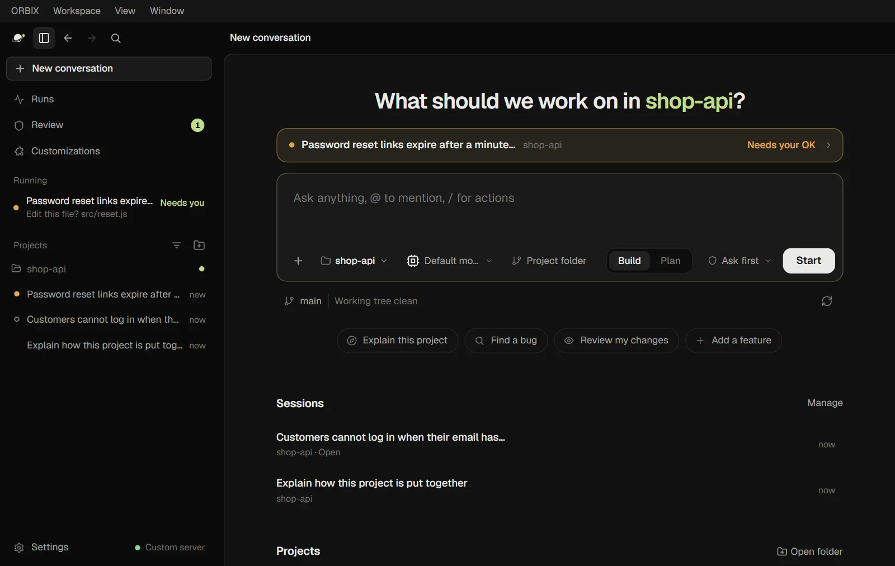
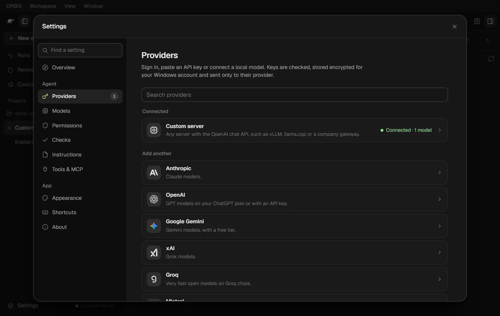
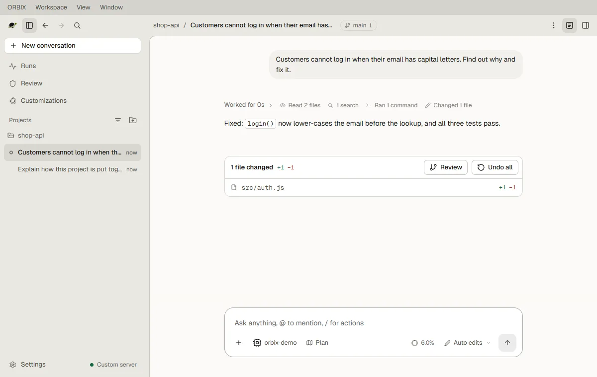

The coding agent that asks first.
ORBIX is an AI coding workspace for Windows that runs on your own machine. The agent reads your project freely. Every edit and every command waits for your OK, and every edit can be undone.
ORBIX-Setup-3.4.0.exe116 MBWindows 10 and 11, x64No admin rights
- you Customers can’t sign in when their email has capitals.
- read src/users.js
12 ms - grep findByEmail
3 matches - edit src/auth.js
waiting for your OK - 4− const user = findByEmail(email.trim());
- 4+ const user = findByEmail(email.trim().toLowerCase());
- 1 Allow once 2 Allow for this session Esc Deny
- run npm test
3 passed · 170 ms - 1 file changed +1
−1· Undo all
- Version
- 3.4.0
- Released
- Nov 20, 2026
- Installer
- 116 MB, per user
- Providers
- 18, plus local
- License
- FSL-1.1-MIT
How a task runs
Every run works in its own git worktree, so your checkout is untouched until you apply. Several runs can work at once.
- 1
Describe the task
Open a Git project in Runs (Ctrl+2) and write what should change. Small tasks can go straight to work; the rest are planned first.
- 2
Read the plan
The agent reads the code and writes a plan, changing nothing. Comment on any passage and it writes a new revision.
- 3
Approve a scope
You choose file edits, or edits and commands, inside the run’s own worktree. Deleting, pushing or publishing still asks every time.
- 4
Review, then apply
Read the diff, the test log and the walkthrough. Apply merges into your branch and keeps your own uncommitted work; Discard removes it all.

An agent, a diff viewer, a terminal and git in one window
You bring a model: an API key, a sign-in, or a model on your own PC. Everything else is in the app.
- Runs
- A task planned, approved and done in its own worktree, with a timeline, a test log and a walkthrough to review.
- Review queue
- One list across projects of everything that waits for you: approvals, plans, finished changes. Ctrl+3.
- Recovery
- If ORBIX closes mid-run, the run says what was in flight and continues only when you say so.
- Overview
- A card beside the conversation opens changes, files, terminal and plan, with helper agents and background runs. Ctrl+Alt+O.
- Permissions
- One chip in the message box: Ask first, Auto edits or Turbo. Destructive commands always ask.
- Undo
- Each file change has its own undo, and /undo reverts a whole reply.
- Changes panel
- Every edit as a diff next to the chat. Stage, discard and commit without leaving.
- Self-checks
- Runs the project’s test or build after edits, then reviews its own diff once.
- Commands
- Run on Windows or in WSL. Output streams live, and Esc stops it.
- Project rules
- Reads
AGENTS.mdorCLAUDE.mdfrom the project, plus your own instructions for every project. - MCP and skills
- Tools from
.mcp.jsonservers, and workflows fromSKILL.mdfolders. - Themes
- System, Dark, Light, Midnight and Frost, five animated scene themes, and Windows high-contrast support.
Screens from 3.4.0






Taken from the real app on a sample project with a scripted local model. The tools in them really ran.
Bring your own model
Model lists come live from each provider. Prices and context sizes come from the models.dev catalog. Keys are checked before they are saved.
- AnthropicAPI key
- OpenAIAPI key or ChatGPT sign-in
- Google GeminiAPI key
- xAIAPI key or sign-in
- OpenRouterAPI key or sign-in
- OpenCodeZen, sign-in or Go plan
- GroqAPI key
- MistralAPI key
- DeepSeekAPI key
- Together AIAPI key
- Fireworks AIAPI key
- CerebrasAPI key
- MoonshotAPI key
- Z.aiAPI key
- QwenAPI key
- OllamaOn this PC
- LM StudioOn this PC
- Custom serverAny OpenAI-compatible URL
Custom server covers vLLM, llama.cpp or a company gateway. With Ollama or LM Studio, nothing leaves your PC.
What stays on your PC, and what doesn’t
Approvals are a checkpoint, not a sandbox. The agent runs with your own user permissions, so read what you approve.
Stays here
- API keys, encrypted for your Windows account and never logged.
- Conversations and settings, in
%LOCALAPPDATA%\ORBIXas plain files. - The local server, on
127.0.0.1only, with a new token each launch. - Everything, when you use Ollama or LM Studio.
Leaves your PC
- Your messages, project rules and the files the agent reads, to the model provider you chose.
- Each key, only to the provider it belongs to.
- Update checks, to this project’s GitHub releases. Downloads are verified with SHA-512.
- Nothing else. There is no account and no telemetry.
Releases
- 3.4.0A desktop shell like the Antigravity App: menu row, toolbar with back and forward, an Overview card, a permission chip, a navigator of dots, and a neutral dark theme.
- 3.3.0Runs: a task planned, approved and done in its own git worktree, then reviewed and applied. One Review queue, recovery after a restart, folded steps.
- 3.2.2A calmer interface, a new sidebar, scene themes, accurate model facts and thinking levels.
- 3.2.1UI fixes and clearer settings text. Dates on older messages, clearer sign-in errors.
- 3.2.0Windows installer, automatic updates, a new Home and sidebar, parallel sessions on git branches.
- 3.1.0Midnight and Frost themes, high-contrast support, clearer controls.
- 3.0.0First release of ORBIX as a Windows app with its own agent.
Every change is listed in CHANGELOG.md.
Questions
Do I need an account?
ORBIX has no account of its own. You bring a model: an API key from a provider, a sign-in such as OpenRouter, or a model running on your own PC.
Can I undo what the agent changed?
Yes. Every file change has its own undo, and /undo reverts a whole reply. Commands cannot be undone, which is why they ask first.
Will it change files or run commands without asking?
No. Reading and searching run without asking. Edits and commands ask first, unless you turn on Allow everything in Settings, which asks you to confirm.
Why does Windows warn about the installer?
The installer is not code-signed yet, so SmartScreen asks the first time. Choose More info, then Run anyway. Later updates install without the warning.
How does it update?
It checks GitHub when it opens and every 4 hours, downloads in the background and installs when you close ORBIX. Restart at the bottom of the sidebar installs at once. You can turn this off in Settings → About.
Is it free?
ORBIX is free to use. The source is available under the Functional Source License, and each release becomes MIT two years after it ships. Your model provider charges for its own usage.
Install ORBIX
- 1Run
ORBIX-Setup-3.4.0.exe. It installs for your account only. - 2Open Settings → Providers and connect a model.
- 3Open a project folder, describe a task and press Enter.